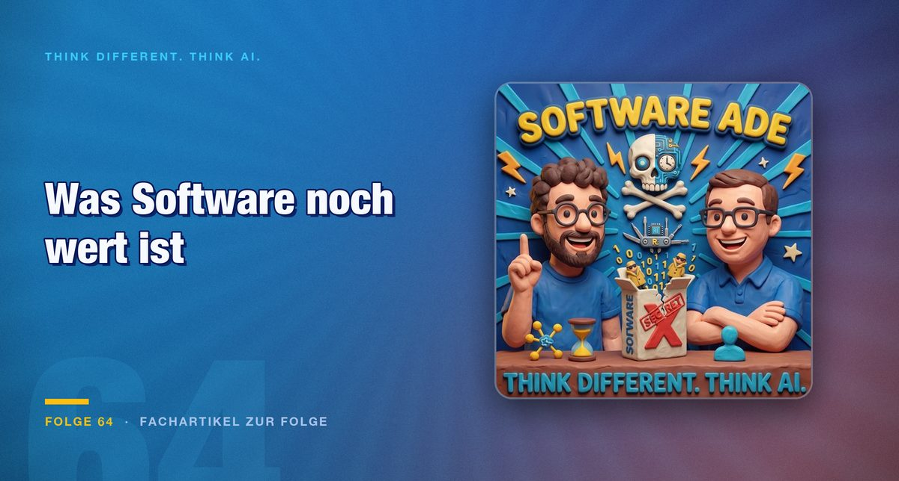

Folge 64 · Fachartikel zur Folge
Vom Produkt zur Dienstleistung: Was Software noch wert ist
Wenn sich fremde Programme in Stunden nachbauen lassen, verliert das fertige Produkt an Wert. Die Folge sucht den Teil, der bleibt, und findet ihn im Betrieb, in der Anpassung und im Vertrauen zum Anbieter.

Ein fremdes Programm verstehen hieß früher, Dateien Zeile für Zeile zu lesen, Abhängigkeiten nachzuzeichnen und Entscheidungen zu rekonstruieren, die ein Entwickler vor Jahren getroffen hatte, oft ohne sie festzuhalten. Das war eine hohe Kunst und dauerte Wochen. Mit KI-Werkzeugen wird daraus eine Routinearbeit. Für Softwarehäuser, die ihr Geld mit dem fertigen Paket verdienen, ist das eine unbequeme Verschiebung, und genau darum kreist die Folge.
Vom Nachbau zum eigenen Werkzeug
Die Folge beginnt bei Spielen. Mario taucht in Fortnite auf, samt Eigenheiten aus dem Original, etwa dem Übergang in die nächste Etappe, wenn die Figur durch eine Tür springt. In Mario Kart sitzt eine Figur mit Scharfschützengewehr in einem Auto und schießt auf Gegner. Ein anderer Vorschlag kreuzt Populous mit Bubble Bobble, bis die eigenen Figuren in Seifenblasen verpackt werden. Die Hosts sehen darin eine Explosion der Kreativität: Kombinationen, auf die vorher niemand gekommen ist.
Ob das legal ist, lassen die Hosts offen. Die Folge gibt keine Rechtsberatung und keine Aufforderung. Sie beobachtet, was draußen passiert.
Bei Grafiksoftware wie Figma stellt sich eine andere Frage als die, ob man sie nachbauen kann. Die Folge hält es für wenig sinnvoll, eine Arbeitsweise aus den letzten 20 bis 30 Jahren des Desktop-Publishings originalgetreu zu kopieren. Dort zieht man mit der Maus einen Rahmen um Objekte, stellt Linienstärke und Füll- sowie Vordergrundfarbe ein und arbeitet sich durch Menüs. Interessanter ist ein Werkzeug, das auf die eigene Arbeit zugeschnitten ist.
Als Beleg dient ein Kollege, der mit Opus in kurzer Zeit interaktive Simulationen im Browser gebaut hat: einen Herzkreislauf, die Erosion in einem Tal, an der sich ein Fluss entlangschlängelt, und eine Raketenturbine. Jede dieser Visualisierungen lässt sich mit Drehreglern steuern, die der Nutzer selbst bedient. Statt eine Lizenz für ein allgemeines Programm zu zahlen, entsteht eine Lösung für die eigenen Abläufe. Die Hosts nennen das eine Frage der Werkzeuge, die sich jeder selbst baut, und nicht nur eine Frage des Kopierens.
Ein weiterer Befund überrascht die Folge. Auf Statistiken verweisen die Hosts, ohne sie offenzulegen. Demnach stehen ganz vorn nicht die großen Nachbauten, sondern Treiber für alte Hardware und Support für alte Dateiformate. Die Hosts nennen das selbst erstaunlich.
Von der Oberfläche zur Schnittstelle
Ein Versuch aus der Folge treibt die Frage weiter. Eine bestehende App wird so nachgebaut, dass sie als MCP-Server läuft, ohne eigene Benutzeroberfläche. Das Ergebnis funktionierte, und das Werkzeug ließ sich in Claude, Codex oder einer anderen Umgebung einbinden. Danach spricht eine KI direkt mit dem Backend. Die Folge fragt, ob das Backend überhaupt bemerkt, dass es nicht mehr von einer App angesprochen wird, und stellt den Gedanken dahinter in den Mittelpunkt: Die Oberfläche war bisher das Produkt, jetzt wird sie zur Schnittstelle.
Die Folge greift noch eine zweite Richtung auf. Auch alte Hardware fällt unter das Thema. Geräte, für die der Hersteller keine Updates mehr liefert, lassen sich analysieren und neu beleben. Mark beschreibt eine kleine Lautsprecherbox mit leuchtendem Ring, deren Sprachausgabe ihm nicht zusagt:
„Ich werde das Ding jetzt einfach flashen, reverse engineeren und mal eine eigene KI-Variante dann da drauf setzen.“
Der Plan ist, die Box mit seinem Second Brain zu verbinden. Ähnlich sehen die Hosts Haushaltsgeräte wie Staubsauger oder Lüfter, deren Begleit-App sie als wenig überzeugend beschreiben. Wer die Schnittstellen versteht, kann eine eigene Steuerung darüber legen.
Service statt Paket
Aus der Argumentation folgt eine wirtschaftliche Konsequenz. Ein digitales Produkt lässt sich kopieren, die Dienstleistung drumherum nicht so leicht. Wartung, Anpassung und die Geschäftsbeziehung kosten Zeit und Geld, und dort sehen die Hosts den Wert. Bestandskunden haben dabei einen Vorteil, den ein frischer Nachbau nicht sofort bietet: Wer eine Software seit Jahren im Betrieb hat, kennt die Prozesse und hat Vertrauen aufgebaut.
Daraus ergeben sich Folgen für die Verträge. Lizenzlaufzeiten von zwei oder drei Jahren verlieren an Selbstverständlichkeit, wenn sich Software schneller ändert. Die Folge denkt an Angebote, bei denen der Anbieter weniger ein fertiges Paket verkauft als Beratung und laufende Anpassung. Als Beispiel nennen die Hosts ein Softwarehaus, das den Kunden in zwei Jahren 400 Versionen seiner Software ausliefert. Am Ende des Zeitraums, so die Überlegung, sieht die Lösung anders aus als am ersten Tag.
Die Beobachtung stammt aus dem Unternehmensalltag. Eine Standardsoftware passt selten vollständig. Oft liegt sie nur bei 80 oder 90 Prozent, weil Workflows, Daten und Schulungen nicht übereinstimmen. Der Rest wird heute mit Beratern, Schulungen und Umbauten geschlossen. Die Folge sieht darin einen ersten Hebel für Anbieter: die Software früh an das jeweilige Unternehmen anpassen, statt Schulung und Anpassung getrennt zu verkaufen.
Vertrauen bleibt dabei der Engpass. Ob ein Kunde einer schnell nachgebauten Software vertraut oder lieber einem Partner, mit dem er seit Jahren arbeitet, ist für die Hosts eine offene Frage. Sie erwarten, dass der Wettbewerb und mit ihm der Druck auf die Preise steigen.
Die Kluft zwischen Bauen und Nutzen
Die Folge rechnet an einem Beispiel vor, wie groß der Unterschied ist. Eine Agentur, die eine kleine App etwa für einen Wochenmarkt oder einen Blumenladen baut, kostet nach dieser Rechnung 10.000 Euro. Die Tokens für denselben Zweck liegen im Gespräch bei einigen Hundert Euro, möglicherweise sogar bei rund zehn Euro. Das ist eine Beispielrechnung der Hosts und keine Messung.
Die Kehrseite benennen die Hosts selbst. Wer Zugang zu guten Modellen, zu Tokens und zu Zeit hat, kann dieses Werkzeug nutzen. Wer dafür keine Zeit hat, weil Arbeit, Bildung oder Geld fehlen, bleibt außen vor. Die Gruppe, die tatsächlich Software baut, ist nach Einschätzung der Folge klein. Die Hosts sehen darin eher eine Kluft, die KI verkleinern kann, als eine, die sie vergrößert. Das ist eine Einschätzung, keine belegte Entwicklung. Sie bleibt aber der Teil der Folge, der über die Technik hinausweist.
Fazit
Der Produktwert von Software sinkt, sobald sie sich nachbauen lässt. Was bleibt, ist der Betrieb: Wartung, Anpassung und eine Beziehung zu einem Anbieter, dem man vertraut. Für Softwarehäuser folgt daraus, Lizenzmodelle und Vertragslaufzeiten zu prüfen. Ein Vertrag über drei Jahre passt schlecht zu einem Markt, in dem sich Versionen in Monaten ändern. Bestandskunden sind dabei ein Kapital, das ein frischer Nachbau nicht sofort hat, und sollten entsprechend genutzt werden.
Für Käufer liegt die Konsequenz im Einkauf. Wer eine Software auswählt, sollte den Anbieter nach Betreuung und Anpassungsfähigkeit beurteilen und nicht allein nach dem Funktionsumfang. Die Folge selbst bleibt bei einer Tendenz und lässt die Preisfrage offen. Ihr Hinweis ist eindeutig: Das fertige Produkt allein trägt den Preis immer weniger.